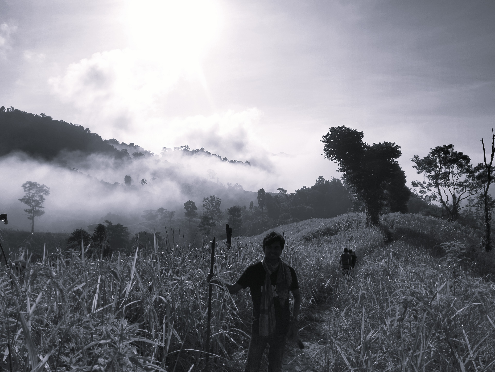

About

Hello, I’m Arnab Raha, a civil engineering student at the Bangladesh University of Engineering and Technology (BUET). My interests lie in modeling, simulation, optimization, and the application of artificial intelligence in solving civil engineering problems. I am particularly interested in data-driven approaches that connect theoretical concepts with real-world systems.
I developed an early interest in problem solving through programming contests and olympiads, often without notable success—but the process itself kept me engaged and shaped how I approach problems today.
Over time, this evolved into a stronger focus on computational methods. Alongside my academic work, I have gained experience with tools such as QGIS, AutoCAD, and MATLAB, and programming in C, C++, C#, and Python. I have also explored game development using Unity, which led to securing 3rd place in the BUET CSE Fest Game Jam 2024. I remain actively involved in collaborative work through organizations such as the American Concrete Institute, American Society of Civil Engineers, and the BUET Robotics Society.
A key area of my work has been the modeling and optimization of metro rail headways in Dhaka using simulation and genetic algorithms, which eventually led to a conference publication. More recently, I worked on analyzing particle dynamics from video for flocculation studies, strengthening my interest in experimental and data-driven analysis. I also continue to explore the use of AI models in engineering contexts.
Outside of academics, I enjoy traveling and exploring new places, especially experiences that involve a sense of challenge or adventure.
I tend to think about things longer than I probably should—sometimes about problems that don’t really matter. But every now and then, those “unnecessary” thoughts end up leading somewhere interesting.